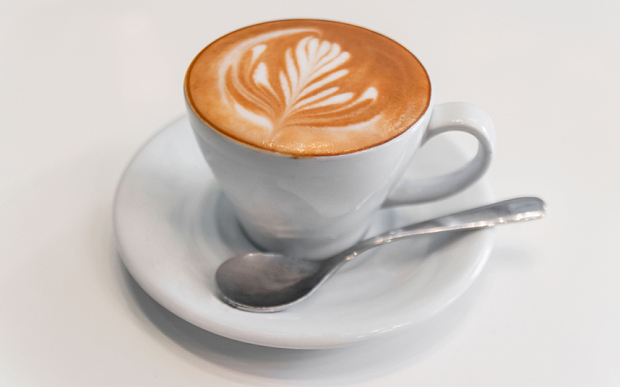

A cappuccino is an espresso-based coffee drink that originated in Italy, and is traditionally prepared with steamed milk foam. Variations of the drink involve the use of cream instead of milk, and flavoring with cinnamon or chocolate powder.It is typically smaller in volume than a caffè latte, with a thicker layer of microfoam.
